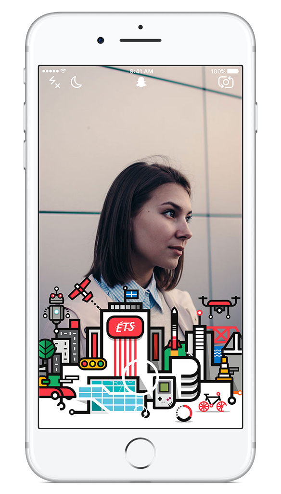
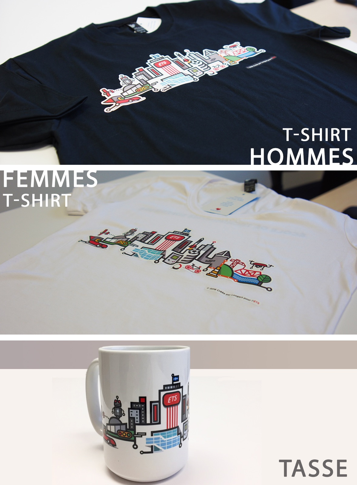

ÉTS CityLine Illustration
The Ecole de Technologie Supérieure in Montreal commissioned Loogart to create a CityLine illustration of its most popular landmarks and elements. The university selected all items included in the design. The exercise was to ensure that the overall design stayed true to the ETS brand while coinciding with the CityLine style by Loogart.
Scroll
Snapchat filter
The illustration is destined to be part of the University's social media campaign, more specifically Facebook and Snapchat. Using the Snapchat geofilter feature, the University will be able to engage more students in its programs and activities.
The Cityline is also produced on University apparel sold onsite such as shirts and mugs.
Innovation
The ETS differentiate themselves by tailoring their brand to a bold and fresh look which helps them gain traction for student recruitment and increases existing student interaction.